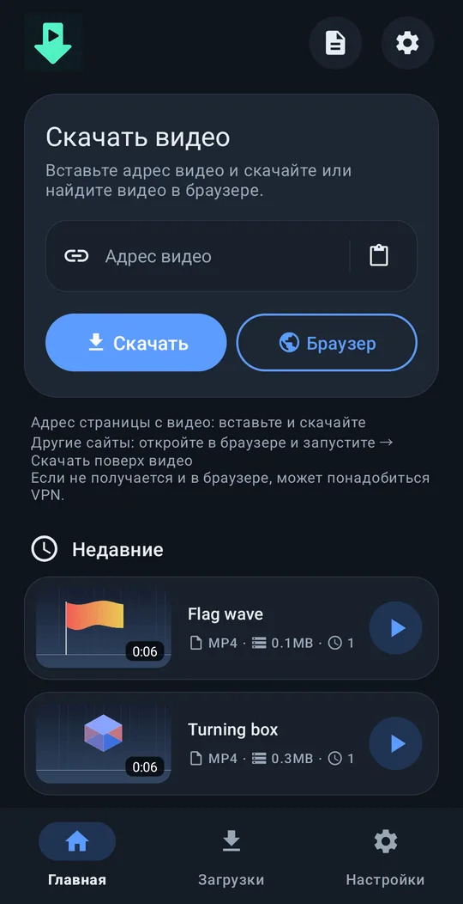
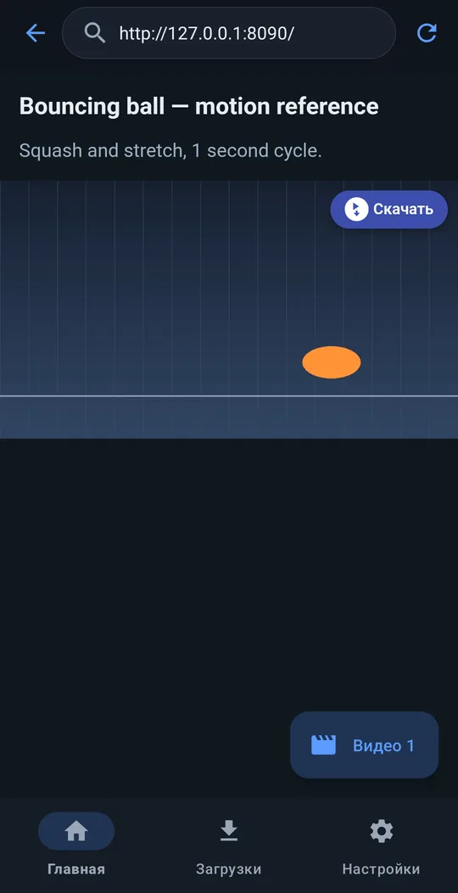
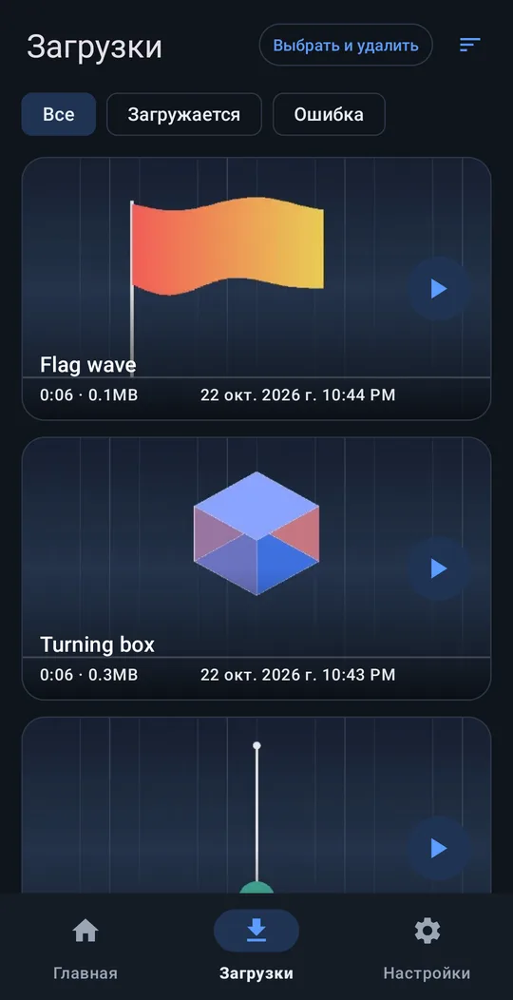
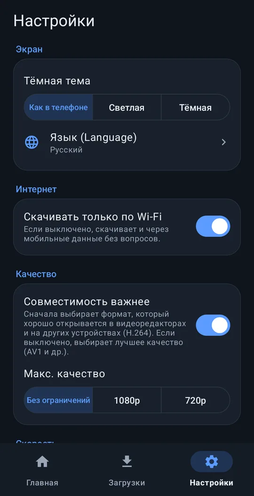

Скачивайте любое видео!!
Просто вставьте ссылку на видео — и скачайте.
⬇ Скачать приложение (APK) 💻 Версия для ПК
Android 8.0+ · бесплатно · без регистрации
Как это работает




Возможности
Вставьте ссылку
Работает с большинством популярных видеосайтов.
Кнопка «Скачать» на видео
Во встроенном браузере над воспроизводимым видео появляется кнопка «Скачать» — помогает на многих сайтах, где ссылка не срабатывает.
Сразу для монтажа
Сохраняется в Movies/VideoRef. С «Совместимость важнее» выбирается формат, который монтажные приложения сразу открывают.
Работает в фоне
Продолжает загрузку при выключенном экране. Можно выбрать «Скачивать только по Wi-Fi» и максимальное качество.
10 языков
English, 한국어, 简体中文, 繁體中文, 日本語, Español, Deutsch, Français, Português (Brasil), Русский. Светлая / тёмная тема.
Нам ничего не отправляется
Регистрация не нужна, разработчику ничего не отправляется.
Установка
- Скачайте установочный файл (APK) кнопкой выше.
- Откройте скачанный файл на телефоне.
- Если появится запрос, разрешите браузеру или файловому менеджеру устанавливать неизвестные приложения и нажмите «Установить».
Поддержать just downloader
just downloader бесплатен. Если он сэкономил вам время, небольшая поддержка поможет следующему обновлению.
Частые вопросы
Это правда бесплатно?
Да, полностью бесплатно. Без регистрации и пробного периода.
Отправляет ли он мои данные?
Персональные данные не отправляются. Разработчику ничего не уходит, если вы сами не отправите отчёт об ошибке. Политика конфиденциальности
С какими сайтами работает?
С большинством популярных видеосайтов достаточно ссылки. Если не получается, откройте страницу во встроенном браузере, запустите видео и нажмите «Скачать» на нём. Видео с защитой от копирования из платных сервисов сохранить нельзя.
Что-то не работает?
Настройки → Помощь → Сообщить о проблеме создаёт письмо на support@4dir.net с журналом приложения во вложении.